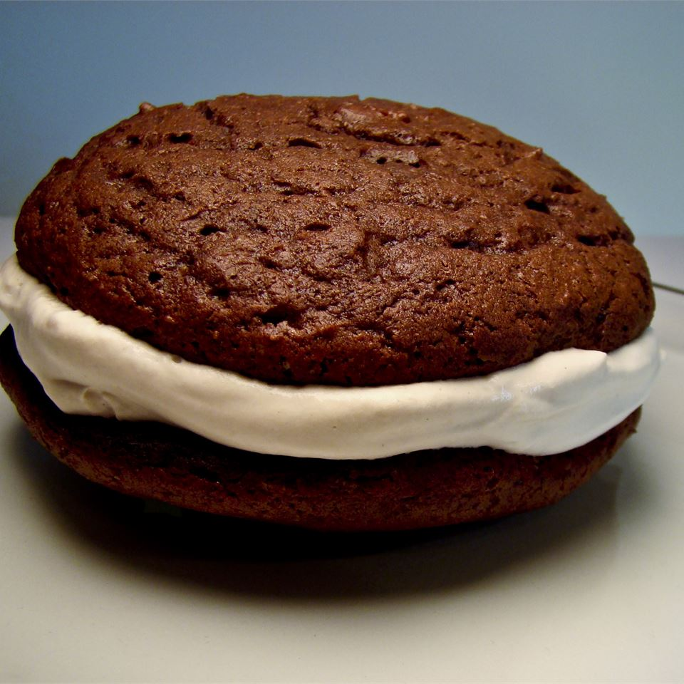

Whoopie Pies

Ingridients
- 1/2 cup shortening
- 1 cup white sugar
- 2 eggs
- 2 cups all-purpose flour
- 5 tablespoons unsweetened cocoa powder
- 1 teaspoon baking powder
- 1/2 teaspoon salt
- 1 teaspoon baking soda
- 1 cup milk
- 1 teaspoon vanilla extract
- 3/4 cup shortening
- 2 cups confectioners' sugar
- 1 pinch salt
- 1 teaspoon vanilla extract
Steps
- Preheat oven to 350 degrees F (180 degrees C). Grease cookie sheets.
- To Make Cookies: In a large bowl cream 1/2 cup of shortening , 1 cup sugar and 2 egg yolks. (Set egg whites aside for filling.) NOTE: If you don't want to use raw egg white in the filling, leave it out. Substitute 1 whole egg for the 2 egg yolks in the cookie recipe so you don't end up with leftover whites!!
- In a separate bowl sift together 2 cups flour, 5 T cocoa, 1 t baking powder, 1/2 t salt, 1 t baking soda. Add to other mixture alternately with milk, beating well. Add vanilla at the end.
- Drop by large spoonful on greased pan. Bake for 10-15 minutes. Remove to wire rack and cool completely.
- To Make Filling: Beat together 3/4 cup shortening, 2 cups confectioners' sugar, 2 egg whites and dash of salt till light. Add 1 tsp. vanilla.
- To assemble: Spread the flat side of one cookie circle with a spoonful of filling. Top with another.